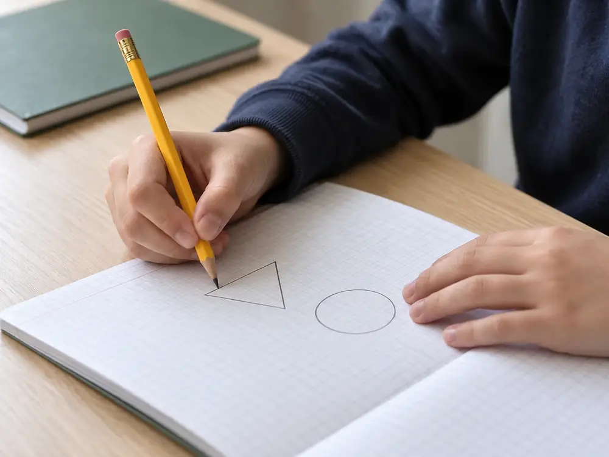

結ノ浦駅前の個別指導塾小学5年〜中学3年
分からなかった所まで、戻って、一段ずつ。
講師1人に生徒2人までの席で、つまずいた単元まで戻ってから進みます。月謝は12,100円から（税込）。
その場で決めなくて大丈夫。勧誘の電話はしません。
-
1段目無料体験ここから60分・いつもの席で

-
2段目面談30分・保護者の方と
-
3段目計画と費用紙1枚ずつ・1年間の総額まで
-
4段目入塾最初の授業から連絡帳
授業の進め方
止まった所から、
一段ずつ戻る。
たとえば中2の「一次関数」で手が止まったら、中1の「比例」、小6の「比と割合」まで戻ります。どこまで戻るかは、体験と面談で一人ずつ決めます。
中学2年一次関数ここで止まった
中学1年比例・反比例
小学6年比と割合ここは解けた
- 見つける
- 最初の10分の確かめ問題で、手が止まった単元を探します。
- 戻る
- 自分で解ける単元まで、学年をさかのぼります。
- 確かめる
- 同じ形の問題を、講師が手を出さずに解きます。
- 積み直す
- 一段ずつ今の単元へ。進み具合は連絡帳で。
合うかどうか
こんな子に、向いています。
- どこから分からなくなったのか、
本人にも分からない - 集団の授業だと、
質問できずに置いていかれる - 宿題はやるのに、
テストになると手が止まる - 前の学年の内容に、
穴がありそうだと感じている
向いていないかもしれない子
- 競い合う集団授業の方が、やる気が出る
- 中学受験の専用講座を探している
（この塾にはありません） - 毎日、長い時間の自習席を使いたい
合わないと思ったら、
体験のあとに遠慮なくお断りください。
生徒のみんなへ「分からない」と言っていい場所です。そこから一緒に戻ります。
コースと料金
学年と困りごとから、
コースを選ぶ。
学年を選ぶと、合うコースの列に印が付きます。
金額はすべて税込です。
| 小学生コース | 中学生コース | |
|---|---|---|
| 対象 | 小学5・6年 | 中学1〜3年 |
| 回数・時間 | 週1回・60分 | 週2回・80分 |
| 月謝 | 12,100円 | 22,000円 |
月謝のほかにかかるもの（両コース共通）
- 入塾金11,000円入塾時のみ
- 教材費8,800円年1回
- テスト前の追加授業3,300円1回80分・申し込んだ回だけ
入塾した年の総額の例中学生コース・追加授業4回297,000円内訳と計算
お約束
保護者の方への、
3つのお約束。
- 毎回、連絡帳で
- 戻った単元・できたこと・次回の予定を、授業のたびに書いてお渡しします。
- 総額を先に
- 入塾金・教材費を含めた1年間の費用を、入塾の前に紙でお見せします。
- 電話はしません
- 体験のあと、入塾を勧める電話はしません。お返事の期限もありません。
成績が上がるとはお約束できません。取り組み方や、どこまで戻るかによって変わります。
1段目・無料体験
まず60分、
いつもの席で。
- このフォームで申し込む
- 体験の日時を、電話かメールでご連絡
- 60分の体験。お迎えのときに5分ほど様子をお伝え
返信の目安：お申し込みから2日以内（日曜を除く）【要確認】